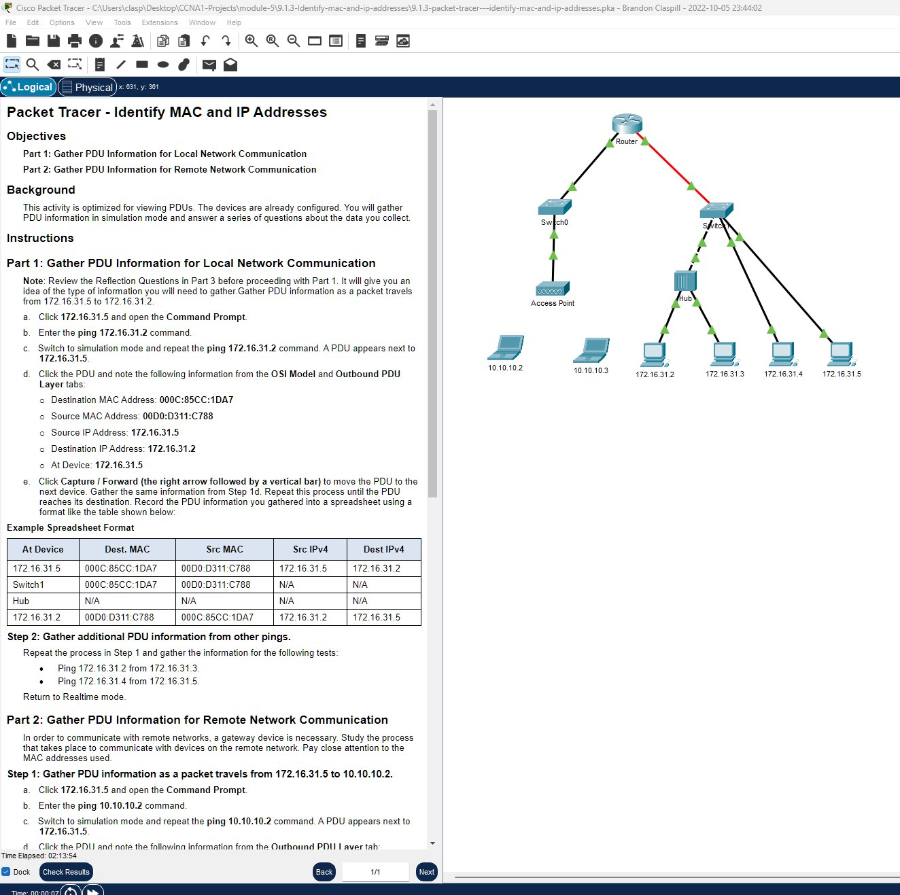
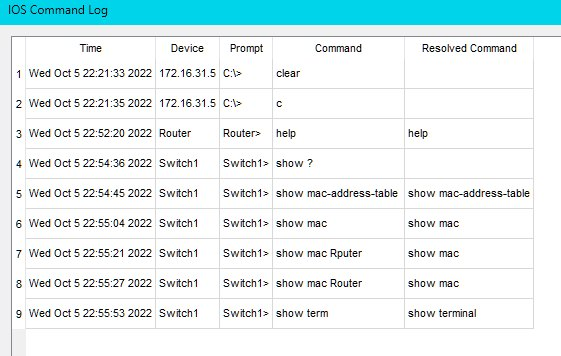
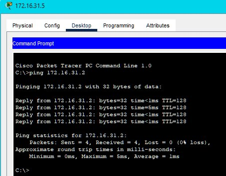
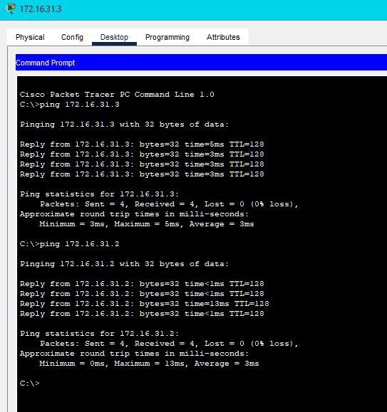
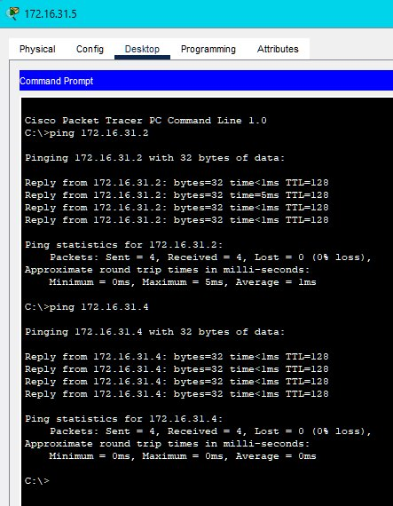
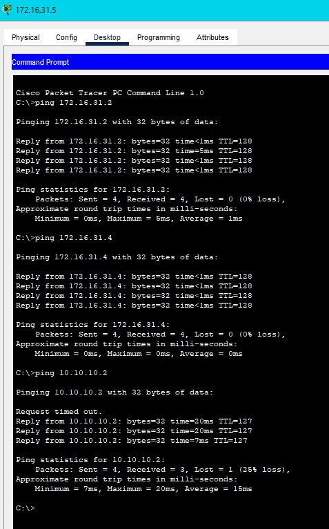

Open Docx Document
Open Docx Document
Embedded Google Docs
Embedded Google Sheets
Screenshot Final Config






Packet Tracer File
You can download and open the Packet Tracer simulation file for this module using the link below:
Download Module1 Packet Tracer File